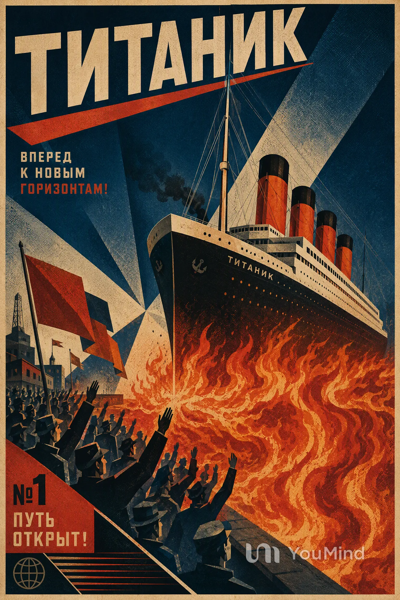

壹
第一回 · 起航
金船出海，群仙入夢
巨輪破霧而行，滿船人間繁華，竟不知腳下已踏入黃泉渡口。
天地不仁 · 以萬物為芻狗
傳聞，鐵達尼號啟航之日，海面平靜得像一面照妖鏡。 無人知曉，船底沉睡著一枚古老的業火印。
鐘聲三響，霧鎖長夜。富貴者舉杯，旅人談夢； 而在黑潮之下，有一雙眼睛，已經等了千年。
若此船不沉，萬魂不得歸位；若此火不熄，天門必裂。 這不是一場意外，而是有人早已寫好的劫數。
每一章，皆是一道不能回頭的命。
第一回 · 起航
巨輪破霧而行，滿船人間繁華，竟不知腳下已踏入黃泉渡口。
第二回 · 異兆
午夜鐘響，無人敲擊。有人看見海面之下，千萬盞紅燈一齊睜開。
第三回 · 破戒
白色山影撕裂黑夜。船長抬頭一望，竟見山巔立著一尊無面金身。
第四回 · 業起
火光自船腹竄起，金漆剝落如人皮。逃亡者所見，盡是前世冤魂。
第五回 · 墜海
海水吞沒甲板，祈禱聲漸遠。此刻人間的金銀，再不能換來一寸生機。
第六回 · 餘燼
百年後，海底傳來最後一聲鐘響。那艘船，仍在等待它真正的乘客。
海能載舟，亦能藏罪。
火能照夜，亦能照出人心。
——《燼海異聞錄》殘頁
六幅遺影，六段無人作證的記憶。
點擊任一殘卷，可見其全貌。
THE END IS ANOTHER BEGINNING
若你聽見海底有人喚你的名字——
切莫回頭。
第一回

01 / 霧港